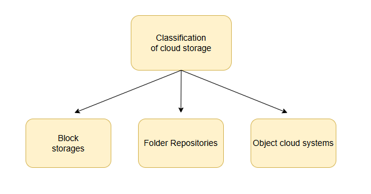
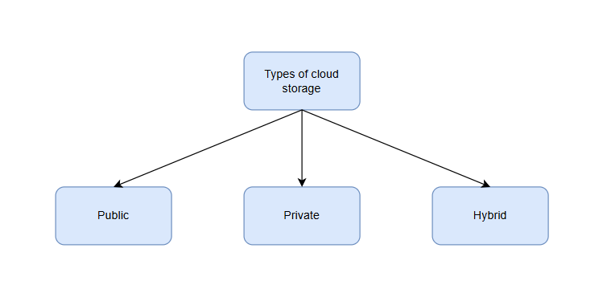
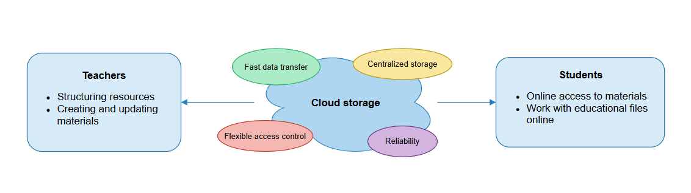

Abstract of the Master's Thesis
Topic: Development of Cloud Storage for the Educational Process
Contents
- Introduction
- Theoretical Information on Cloud Storages
- References
Introduction
The modern educational process requires high availability and structured information. With the increasing digitalization of educational resources, there is a growing need for convenient storage, sharing, and management of data. Cloud technologies provide such capabilities, combining flexibility and scalability with minimal infrastructure costs. Their use allows teachers and students to work with materials from anywhere, ensuring the continuity of the learning process and saving resources.
1. Theoretical Information on Cloud Storages
1.1 The Concept of Cloud Technologies and Cloud Storage
Cloud technologies make it possible to abstract from the physical infrastructure and manage computing resources via the Internet. They enable organizations to save on local servers while maintaining access to data from any location. There are four key models of cloud solutions:
- IaaS (Infrastructure as a Service) – renting infrastructure for data storage and creating virtual machines. Advantages: flexibility and no need to maintain physical infrastructure. Disadvantages: provider dependency and limited customization.
- PaaS (Platform as a Service) – providing a platform for application development and deployment. Advantage: ready-made infrastructure for rapid development startup. Disadvantage: limited portability between platforms.
- SaaS (Software as a Service) – subscription to ready-to-use applications without installation. Advantages: access to services from anywhere, automatic updates. Disadvantage: constant Internet connection required and long-term subscription costs.
- FaaS (Function as a Service) – executing individual functions on demand. Advantages: resource efficiency, function management handled by the provider. Disadvantage: adaptation of processes to the service architecture.
Cloud storages are part of these models, providing convenient data storage and scalability as the amount of information grows.
1.2 Classification of Cloud Storages
Cloud storages differ in architecture and data storage method. The main types include:
- Block storage – data is divided into blocks with unique identifiers. High performance, but expensive and complex to maintain.
- File storage – intuitive folder and file structure, easy OS integration, but limited scalability.
- Object storage – storage abstraction through APIs, supports large volumes of data, but requires mastering interfaces and configuring access.

1.3 Cloud Storages in the Educational Process
The teaching process generates various types of data: organizational materials, course content, control data, student group information, and final grades. Effective management of these resources requires tools that ensure accessibility, security, and learning progress analysis. Traditional data carriers and local storage are becoming less relevant due to scalability and collaboration limitations.

1.4 Advantages and Disadvantages of Data Management Methods
The need for efficient data storage in education requires analysis of existing methods of information organization:
| Method | Advantages | Disadvantages |
|---|---|---|
| Written Media | 1. No dependency on digital resources 2. Long-term physical storage |
1. Archive overload 2. Information search problems 3. Storage risks 4. Duplication issues |
| Local Storage | 1. Offline data access 2. Security |
1. Data loss risks 2. Limited access 3. Poor scalability |
| Learning Systems | 1. Progress tracking 2. Course organization 3. Accessibility |
1. Cost 2. Limited metadata 3. Connection issues |
| Cloud Storages | 1. Fast access 2. Scalability 3. Collaborative data access 4. Duplication |
1. Server rental cost 2. Security concerns |
| Educational Resources | 1. Accessibility | 1. Limited metadata 2. Integration issues |
| Specialized Applications | 1. Multitasking 2. Integrations |
1. Application overload 2. Interchangeability 3. Cost |
1.5 Comparative Analysis of Existing Cloud Solutions
The market offers solutions with different approaches to storage and integration. NextCloud provides a flexible and multifunctional platform with versioning support but requires complex configuration. SeaFile focuses on synchronization between devices, has a simple folder structure and user-friendly interface but limited integrations. Google Drive offers numerous integrations and an intuitive interface, but the free storage limit is low, and expansion is paid. VK Cloud provides a domestic solution with basic integrations but is currently unstable and mainly targeted at business users.

1.6 Conclusions
Cloud technologies provide flexibility, scalability, and data accessibility, making them optimal for the educational process. A comparative analysis of existing solutions revealed insufficient focus on specific teaching tasks, confirming the relevance of developing specialized cloud storage. The implementation of such a solution will optimize course organization, enable collaboration, and preserve historical data for disciplines.
References
- Иванов И.И. Методы анализа данных. — Краснодар, 2025.
- Дополнительные источники по облачным технологиям и хранению данных.
- Облачные технологии в бизнесе: [Электронный ресурс]. – 2024. – URL: https://rb.ru/story/oblachnye-tehnologii-v-biznese (дата обращения: 20.12.2024). – Текст: электронный.
- Что такое инфраструктура как услуга (IaaS)?: [Электронный ресурс]. – 2019. – URL: https://aws.amazon.com/ru/what-is/iaas (дата обращения: 20.12.2024). – Текст: электронный.
- В чем разница между PaaS, SaaS, IaaS?: [Электронный ресурс]. – 2024. – URL: https://sailet.kz/saas_paas_iaas (дата обращения: 21.12.2024). – Текст: электронный.
- Что такое облачное хранилище: принципы работы, виды, плюсы и минусы: [Электронный ресурс]. – 2022. – URL: https://sailet.kz/saas_paas_iaas (дата обращения: 22.12.2024). – Текст: электронный.
- IDC: к 2025 году общий объем новых данных достигнет 175 зеттабайт: [Электронный ресурс]. – 2019. – URL: https://www.tssonline.ru/news/idc-k-2025-godu-obshiy-obiom-novih-dannih-dostignet-175-zetabait (дата обращения: 22.12.2024). – Текст: электронный.
- В чем разница между блочным, объектным и файловым хранилищами? [Электронный ресурс]. – 2022. – URL: https://aws.amazon.com/ru/compare/the-difference-between-block-file-object-storage (дата обращения: 26.12.2024). – Текст: электронный.
- Многоуровневая расширяемая архитектура хранилищ бизнес-информации. LSA и SAP BW. Традиционный подход: [Электронный ресурс]. – 2024. – URL: https://habr.com/ru/articles/269727/ (дата обращения: 26.12.2024). – Текст: электронный.
- Файловые системы хранения данных [Электронный ресурс]. – 2020. – URL: https://itelon.ru/blog/faylovye-sistemy-khraneniya-dannykh (дата обращения: 26.12.2024). – Текст: электронный.
- Информационные образовательные ресурсы: классификация, разработка и реализация: [Электронный ресурс]. – 2024. – URL: https://www.work5.ru/spravochnik/pedagogika/informacionnye_obrazovatel_nye_resursy_klassifikac (дата обращения: 27.12.2024). – Текст: электронный.
- Носитель информации: [Электронный ресурс]. – 2015. – URL: https://ru.wikipedia.org/wiki/Носитель_информации/ (дата обращения: 28.12.2024). – Текст: электронный.
- Современные системы хранения данных (СХД): [Электронный ресурс]. – 2023. – URL: https://www.decosystems.ru/sovremennye-sistemy-hraneniya-dannyh-shd (дата обращения: 28.12.2024). – Текст: электронный.
- Seafile: [Электронный ресурс]. – 2018. – URL: https://en.wikipedia.org/wiki/Seafile (дата обращения: 29.12.2024). – Текст: электронный.
- NextCloud: [Электронный ресурс]. – 2021. – URL: https://nextcloud.com/ (дата обращения: 29.12.2024). – Текст: электронный.
- Google Drive: [Электронный ресурс]. – 2023. – URL: https://www.google.com/drive/ (дата обращения: 30.12.2024). – Текст: электронный.
- VK Cloud: [Электронный ресурс]. – 2022. – URL: https://vk.com/cloud (дата обращения: 30.12.2024). – Текст: электронный.
- Облачные технологии в образовании: [Электронный ресурс]. – 2020. – URL: https://edutech.ru/articles/oblachnye-tehnologii-v-obrazovanii (дата обращения: 31.12.2024). – Текст: электронный.
- Безопасность облачных хранилищ: [Электронный ресурс]. – 2021. – URL: https://habr.com/ru/articles/563728/ (дата обращения: 31.12.2024). – Текст: электронный.
- Сравнение облачных хранилищ: [Электронный ресурс]. – 2022. – URL: https://www.comparitech.com/ru/cloud/storage-comparison/ (дата обращения: 01.01.2025). – Текст: электронный.
- Версионирование в облачных хранилищах: [Электронный ресурс]. – 2023. – URL: https://nextcloud.com/versioning/ (дата обращения: 01.01.2025). – Текст: электронный.
- Коллективный доступ к данным: [Электронный ресурс]. – 2021. – URL: https://www.techradar.com/ru/news/best-cloud-storage-for-collaboration (дата обращения: 02.01.2025). – Текст: электронный.
- Облачные решения для малого бизнеса: [Электронный ресурс]. – 2020. – URL: https://rb.ru/story/cloud-business-solutions/ (дата обращения: 02.01.2025). – Текст: электронный.
- Масштабируемость облачных хранилищ: [Электронный ресурс]. – 2022. – URL: https://www.cloudwards.net/ru/cloud-storage-scalability/ (дата обращения: 03.01.2025). – Текст: электронный.
- Сравнение IaaS и PaaS для образовательных организаций: [Электронный ресурс]. – 2021. – URL: https://edutech.ru/articles/iaas-vs-paas (дата обращения: 03.01.2025). – Текст: электронный.
- Облачные технологии и GDPR: [Электронный ресурс]. – 2021. – URL: https://habr.com/ru/articles/592345/ (дата обращения: 04.01.2025). – Текст: электронный.
- Эволюция облачных хранилищ: [Электронный ресурс]. – 2020. – URL: https://www.datamation.com/cloud-evolution/ (дата обращения: 04.01.2025). – Текст: электронный.
- Платформы SaaS для образования: [Электронный ресурс]. – 2022. – URL: https://edutech.ru/articles/saas-platforms/ (дата обращения: 05.01.2025). – Текст: электронный.
- Файловые и объектные хранилища: практическое руководство: [Электронный ресурс]. – 2021. – URL: https://aws.amazon.com/ru/articles/file-vs-object-storage/ (дата обращения: 05.01.2025). – Текст: электронный.
- Интеграция облачных хранилищ: [Электронный ресурс]. – 2023. – URL: https://www.techrepublic.com/ru/article/integrating-cloud-storage/ (дата обращения: 06.01.2025). – Текст: электронный.
- Управление данными в облаке: [Электронный ресурс]. – 2022. – URL: https://www.cio.com/article/ru/cloud-data-management.html (дата обращения: 06.01.2025). – Текст: электронный.
- Архитектура облачных сервисов: [Электронный ресурс]. – 2021. – URL: https://aws.amazon.com/architecture/ (дата обращения: 07.01.2025). – Текст: электронный.
- Облачные хранилища для студентов: [Электронный ресурс]. – 2022. – URL: https://www.edutopia.org/article/cloud-storage-students (дата обращения: 07.01.2025). – Текст: электронный.
- Сравнение Google Drive, Dropbox и OneDrive: [Электронный ресурс]. – 2023. – URL: https://www.lifewire.com/best-cloud-storage-4176970 (дата обращения: 08.01.2025). – Текст: электронный.
- Облачные технологии и безопасность: [Электронный ресурс]. – 2021. – URL: https://www.csoonline.com/article/3233981/cloud-security.html (дата обращения: 08.01.2025). – Текст: электронный.
- NextCloud в образовательных учреждениях: [Электронный ресурс]. – 2023. – URL: https://nextcloud.com/education/ (дата обращения: 09.01.2025). – Текст: электронный.
- Влияние облачных технологий на образовательный процесс: [Электронный ресурс]. – 2022. – URL: https://edtechmagazine.com/k12/article/2022/01/cloud-impact-education (дата обращения: 09.01.2025). – Текст: электронный.
- Облачные вычисления и хранение данных: [Электронный ресурс]. – 2020. – URL: https://www.ibm.com/cloud/learn/cloud-storage (дата обращения: 10.01.2025). – Текст: электронный.
- Функциональные возможности SeaFile: [Электронный ресурс]. – 2021. – URL: https://www.seafile.com/en/features/ (дата обращения: 10.01.2025). – Текст: электронный.
- Облачные сервисы для преподавателей: [Электронный ресурс]. – 2023. – URL: https://edtechmagazine.com/k12/article/2023/02/cloud-services-teachers (дата обращения: 11.01.2025). – Текст: электронный.